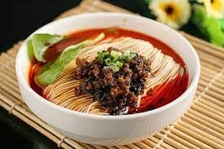

This winter break, I had an awesome time skiing at Keystone in Colorado! The snow was perfect, and the slopes were thrilling. It felt amazing to glide down the mountains with the cold wind in my face. Definitely a trip to remember!
My favorite restaurant is Little Tao. I love it because it serves authentic Sichuan cuisine that truly captures the essence of spicy and flavorful dishes. The bold flavors and the perfect level of spiciness in every dish make it my go-to spot for a delicious meal. It's a great place to experience the richness of Sichuan cooking.
One of my all-time favorite dishes is Dan Dan Noodles, a classic Sichuan dish known for its spicy, savory, and slightly sweet flavors. The perfectly cooked noodles mixed with the ground pork, preserved vegetables, and that essential spicy sauce create a mouthwatering experience. I love serving it with a sprinkle of green onions and a side of crispy wontons, making it the ultimate comfort food for any day.
| Fall of Giants | |
Ken Follett | This epic historical novel is the first in the Century Trilogy, spanning the major events of the 20th century through five interrelated families. |
| A New Account of the Tales of the World | |
Liu Yiqing | Compiled during the Liu Song dynasty, this classic Chinese text offers a fascinating glimpse into the lives and anecdotes of the Wei and Jin dynasties' literati. |
| The Tokyo Zodiac Murders | |
Soji Shimada | A masterpiece of the Honkaku mystery genre, this novel presents a series of complex puzzles wrapped around a bizarre set of murders linked to the zodiac. |
| Millennium | |
Stieg Larsson | Beginning with "The Girl with the Dragon Tattoo," this gripping series blends mystery, intrigue, and social commentary, centered around journalist Mikael Blomkvist and hacker Lisbeth Salander. |